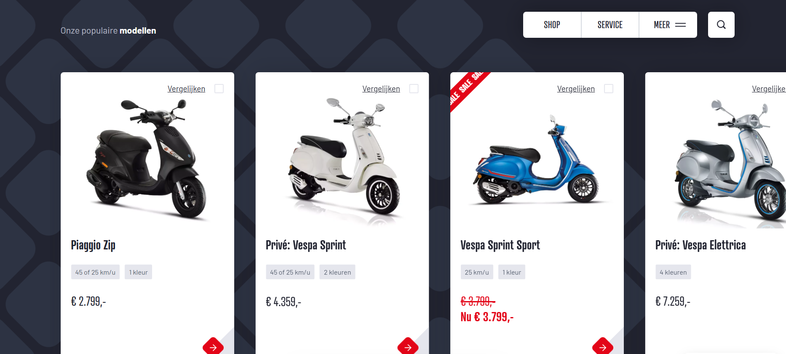
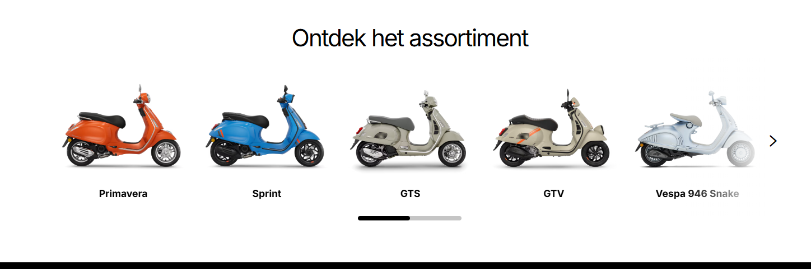

Deze website is ontwikkeld als onderdeel van mijn eindproject voor het vak Webdevelopment. De website is opgezet als een online scooterwinkel, waarin ik Vespa’s, Piaggio Zip en Gilera Runner scooters aanbied. De structuur is gebaseerd op Bootstrap 5 en is volledig responsive. Ik heb HTML, CSS en PHP toegepast volgens moderne webstandaarden.
🖼️ Inspiratie (screenshots)


Inspiratie gehaald van scooterwebsites zoals vespa.com en scooterwinkel.nl.